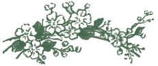
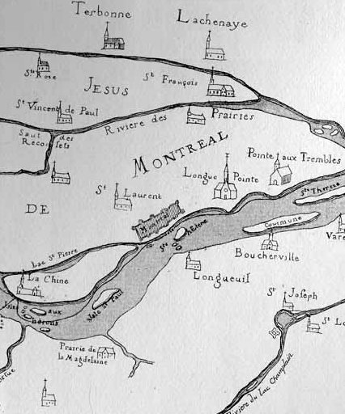
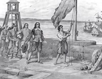
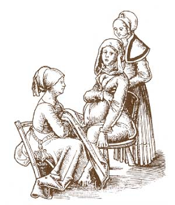
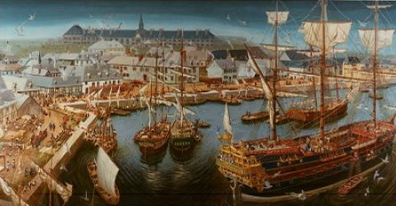
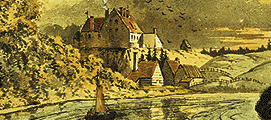

|
|
|
|

Pierre
Choret was born on September 13, 1716, in Charlesbourg, north of the
Seigneurie Notre-Dame-des-Anges, where his great-grandfather,
Mathieu Choret, had received land from the Jesuits in 1647.
About
a year after Pierre's birth, his parents moved to the island of Montréal,
where they lived on the "coste St-Michel". His brother Joseph was born there on
September 26, 1719, and baptized in Notre-Dame
parish. He was given the
names Joseph François; his godfather was François Poirier, a merchant,
and his godmother Marie Joseph Fayer, wife of Monsieur Lestage,
merchant.
The "Coste
St-Michel" is in the
north of the island; it was attached to the parish of Saint-Laurent in 1720,
then to that of Sault-au-Récollet in 1736. The Choret family lived alongside
several Turcots, Angélique's relatives. Among their neighbours and friends were also
Papineaus, Martineaus, Roses, Dagenais, Pigeons, etc... and also the
couple Ignace Lemay and Anne Lecompte.
To
learn the history of Sault-au-Récollet and the places still
worth visiting.
The
two brothers thus grew up near the Rivière des Prairies. They
bought land in the area. On June 11, 1739, before
notaire (notary) C-F Coron, Joseph Choret obtained a land concession on the Rivière Ste-Marie,
in the Seigneurie of Terrebonne, from Louis Lepage, priest and Seigneur of Terrebonne.
And
when the time came to choose a wife, they courted two sisters,
Ignace's daughters, whom they had known since childhood......
 |
|
|


|
|
On
January 8, 1742, three weddings were celebrated at the Chorets', so we can
imagine a great party lasting several days, as
the tradition of the time required. Pierre and Angélique married off their two sons and one of
their daughters. The two brothers married two Lemay sisters, and their
sister Charlotte married Joseph Giroux. She would remarry in 1746,
to Guillaume Valade, and in 1764 to Pierre Chartran. All these
weddings took place at Sault-au-Récollet.  Joseph
and Pierre had many descendants. They lived very much
among relatives.
In the genealogical data we find
people from the Côte Saint-Ange or the Petite Auvergne (hamlets
of the Seigneurie Notre-Dame-des-Anges, near Beauport,
where the Chorets also came from), who died at Sault-au-Récollet or in St-Laurent
on the island of Montréal. They had followed their children there or had
come to settle around 1720, like many others, drawn by
Montréal's economic boom.
We
know that in 1743 Joseph lived on the Côte St-Michel and that in 1781 he
owned a fully cleared farm of 3 by 20 arpents with a house,
barn and stable on the Côte de LaVisitation, and, on the Côte St-Michel,
a 5-by-20-arpent lot of standing timber. From
the baptism records of two of Pierre's children, we know that
in 1745 he was "away at war" and in
1750 "away in the Pays d'en Haut" (the Upper Country).
On
October 2, 1755, Pierre died at Sault-au-Récollet
at the age of 39. 1755 was nicknamed "the year
of the great picote": a new smallpox epidemic,
perhaps brought back by the troops returning from Carillon, ravaged the
colony. Was this what killed Pierre?
Joseph was surely there to help his sister-in-law and his young nephews
and nieces. That October day was no doubt etched in his memory forever: not only did he lose his only brother, but on the same day one of his
daughters, Marie-Angélique, was born.
On
the night of November 22 to 23 of the same year, there was an earthquake in New France; the future looked
hard, with war on the horizon, not to mention famines and
epidemics.
But Joseph came through these
events and led a long and apparently
prosperous life. He died on August 29, 1792, still at Sault-au-Récollet,
and was buried on August 30. His widow, Marie-Anne Lemay, died on May
7, 1807, in Saint-Eustache and was buried there on May 9. |
|
|
|
|

The
first Lemay ancestor in New France was Michel Lemay. Born in
1630 in Chesnehutte, near Angers in France, he married Marie Duteau, born
August 21, 1639, in La Rochelle, France, on June 15, 1659,
in Trois-Rivières, in the bourg of La Madeleine. The couple settled
in the Seigneurie de Lotbinière. Marie died in Ste-Croix on November
29, 1675, and Michel in 1684, in Lotbinière. Later, some
Lemays moved toward Montréal, more precisely to the
Sault-au-Récollet area, and several of them married Chorets, and
over more than one generation
As
for Marie Lemay, Pierre Choret's wife, her children also call her "Catherine".
After
Pierre's death in 1755, she remarried, to Charles Cadot, and had more
children. One of them, Michel Cadot, emigrated to the United States, where he was
trading furs above Chippewa Falls in 1791, and he later settled
in LaPointe, Wisconsin. He
lost an arm in the War of 1812. His
half-brother, Pierre Choret, ended up in Saint-Louis, Missouri.
So some of our ancestors' relatives emigrated to the United States
as early as the late 18th century.
|
ANCESTOR CHART
OF MARIE ANNE LEMAY, WIFE OF JOSEPH CHORET

PRINTABLE
VERSION (LANDSCAPE MODE)
|
|
Through
Marie Anne Lemay we descend from a foremother who holds a unique place in the history of the colony: Hélène Desportes.
 Hélène
Desportes was the first baby of European settlers to be born alive in
New France. Hélène
Desportes was the first baby of European settlers to be born alive in
New France.
Her parents, Pierre Desportes and Françoise Langlois,
from Normandy, arrived in Québec in 1619. Hélène was born there on
July 7, 1620. Her godfather was Samuel de Champlain, and her godmother
Hélène Boullé, his wife.
Hélène Desportes
was the niece of Abraham Martin, who would give his first name to the great park on the
heights of Québec and to the hill that links the Upper Town and the Lower Town.
In
1629 the Kirke brothers seized Québec in the name of England. The last two winters had worn out the settlers and famine had struck,
since the ships coming from France to resupply the colony
had been intercepted by the English, who were at war with France. Only a few interpreters, and the widow and children of Louis
Hébert, stayed in the country, now under English rule.
Champlain
sailed on July 24, 1629, with most of the settlers, including the Desportes. They travelled on the Kirkes' three English ships as
prisoners of war. They made a long stop at Tadoussac, then
reached Plymouth on October 20. On learning that the surrender of
Québec had taken place in peacetime, the two nations no longer being at war,
the Kirkes released their prisoners, and the French were able to return to
France by way of Dover on October 27.

|
|

|
Three
years later, by the Treaty of St-Germain-en-Laye, the
North American colony was given back to
France. Champlain returned in 1633 to revive the
colony.
Hélène
Desportes returned to her native land in 1634. Her father had apparently died
during their stay in France; who came with her on the voyage back? Did she return on one of the four ships chartered
by the Compagnie de la Nouvelle-France to carry the
surgeon Robert Giffard and the settlers he had hired
to develop his Seigneurie of Beauport? Among
them were Zacharie Cloutier and Jean Guyon du
Buisson, two more of our ancestors.
|
| On
October 1, 1634, Hélène married Guillaume Hébert, son of
Louis Hébert and Marie Rollet, the first settler and the
first schoolteacher of New France, and also the
first Frenchwoman to set foot on the soil of Québec, in
1617.
Louis
Hébert, born in Paris in 1575, near the Louvre, was an
apothecary. He took part in the attempts
at settlement in Acadia, then went with Champlain on
his venture at Québec. Despite many
difficulties and obstacles, he cleared and sowed his land, planted
apple trees and raised cattle. His ideal was to
live with his family in relative independence,
keep good relations with the Native people, with
whom he studied the country's plants, and support his
compatriots in need. Louis Hébert died
in January 1627.
So his son Guillaume,
when he married Hélène Desportes in 1634,
owned, by inheritance, half of his father's fiefs, about 500 arpents at the top of
the cliff, above today's Place Royale.
The
lands granted to Louis Hébert in 1623, which he
had occupied and cleared by hand since his
arrival, correspond today to the site of the
basilica, the seminary and rues Hébert and
Couillard.
|

Louis Hébert's house at the top of the
cliff;
the Habitation built by Champlain below the cape. |
|
Hélène
Desportes and Guillaume Hébert had 3 children :
- Joseph,
baptized November 3, 1636, in Québec; he married Marie-Charlotte de
Poitiers Buisson in 1660. In June 1661 he was killed on the Île d'Orléans
by drunken Iroquois who had taken him prisoner during a raid..
- Françoise,
baptized January 23, 1638, in Québec. In 1651 she married
Guillaume Fournier.
- Angélique,
baptized August 2, 1639, in Québec. Fate unknown.
Guillaume
Hébert died on September 23, 1639.
Hélène
remarried on January 9, 1640, in Québec, to Noël Morin, 39, son of Claude
Morin and Jeanne Moreau, of Saint-Étienne-de-Brie-Comte-Robert,
Seine-et-Marne.
They
had twelve children, including our foremother, their eldest daughter Agnès, born January
21, 1641, in Québec. Agnès married first, in 1653, Nicolas Gaudry
dit Bourbonnière, 32. Then, as her second husband, she married Ignace
Bonhomme dit Beaupré.
In 1653, Noël
Morin became owner of part of the
seigneurie of Rivière-du-Sud, in Montmagny, which
included, among other things, Île aux Oies. Despite this
acquisition, which he would divide up among his children, the
new seigneur kept his property in Québec as his main
residence. From 1664 he managed the property of
Marguerite Langlois, Abraham Martin's widow, and her
heirs. That is how he sold 39
arpents of Abraham's land to the Ursulines. This is part of today's
Plains. The price of the transaction: 1,200
livres, a fortune in today's money.
Hélène
Desportes and Noël Morin, their children and their families lived, according to
the censuses of 1667 and 1668, on the côte St-Jean, the
côte Ste-Geneviève or the côte St-François, in other words in the heart
of Québec's Upper Town,
where all the institutions were:
the Hôtel-Dieu, the Seminary, the basilica, Fort
St-Louis... Some of these institutions were
built on land given or sold by Guillemette
Hébert, Louis's daughter, and her husband Guillaume Couillard
(the first settler to use a plough). For
example, in 1666 Guillemette, a widow for three
years, sold Mgr de Laval the land needed to
build the Petit Séminaire. Today
the site of the Hébert-Couillard house is marked
by a cairn in an inner courtyard of the
seminary.
|
|

|
Hélène
Desportes worked as a sage-femme (midwife) for ten years and passed her
knowledge on to two of her daughters, Françoise Hébert and Louise Morin, and to
three of her granddaughters.
It
was an essential trade in the colony; the midwife was chosen by the
other women for her knowledge, her personal experience and the
confidence she inspired in mothers-to-be.
Hélène
died on June 24, 1675, in Québec. Noël Morin
died on February 10, 1680, in
Montmagny; his funeral was held in Québec five days later..
|
|
|
|
|
1716 - 1755
In
1716, the year Pierre was born, the colony's leaders began
fortification work in Montréal
and Québec. They feared being attacked again
by the English. In Montréal, it was decided to surround the
town with a stone wall flanked by bastions on the site
called Faubourg-Québec. When, in
1713, the second intercolonial war (the War of the Spanish
Succession, begun in 1701) ended, the
warring parties in Europe signed the Treaty of Utrecht. Once again the stakes were decided in Europe, and this
time the King of France preferred to leave some parts of
New France to England in exchange for advantages in
Europe. It was a real disaster for the colony.
With this treaty, New France lost Acadia, Newfoundland
and Hudson Bay, that is to say
5,000 Acadian settlers,
good fishing grounds and the largest reservoir
of furs.
New France was reduced to a long corridor along the
banks of the St. Lawrence;
the entrance to the gulf was threatened, and communications
were in danger of being cut.
With
a population of barely 18,000, the
colony was in a sorry state. Fortunately it
enjoyed peace for 30 years, until 1744. The
administrators Bégon, Dupuy and Hocquart followed one another; the
colony grew and sought to exploit new
natural resources, including mines. Among other things,
there was an attempt to work a slate quarry at Lake Champlain, with
the aim of replacing the shingles used for roofs
with slate, which is less flammable.
In several fields, people tried to produce basic
necessities so as not to depend on
imports. But these efforts were often in vain or
full of obstacles, for lack of skilled labour,
lack of government subsidies, or poor
management. Proof that there has been nothing new under the
sun for centuries!
 In
1718, still as part of this fortification effort, construction began on the
fortress of Louisbourg, on Cape Breton Island,
to hold a position at the mouth of the river.
In the following years many
strategic forts were also built on the Richelieu and in
the Great Lakes region.
In
1721, the colony's population was 24,951. On June 19, in Montréal, during the Corpus Christi celebrations, an
arquebusier fired on the roof of the Hôtel-Dieu chapel:
171 houses burned. Fire remained an ever-present threat
in New France.
In
1735, the Chemin du Roy (King's Road) was opened along the north shore of the St. Lawrence,
from Québec to Montréal, after four years of work. The trip
from one town to the other with a single horse took four days, and
thirteen bridges had to be crossed.
 In
1738, production began at the Forges du Saint-Maurice near
Trois-Rivières. They made tools, wrought iron, cooking
pots, cannonballs, heating stoves and other
everyday objects, but the colony's economy was still based
mainly on exports of beaver pelts (70%).
In
1740, the War of the Austrian
Succession broke out in Europe, once again pitting France against
England. This war had little impact on the colony. In
1745 the English took the fortress of Louisbourg and
destroyed it. It is said that the poor state of the Louisbourg troops
resulted from commercial frauds by the intendant François Bigot and
his accomplice Louis Chambon de Vergor.
For their part, the French tried to reconquer Acadia, but
failed. They could not count on help from the Acadians, who
remained faithful to their oath of neutrality. The war ended
in 1748, and the Treaty of Aix-la-Chapelle gave Louisbourg back to
the French.
In
1748, after the third intercolonial war, a second truce of
a few years followed. Yet the English and the French
clashed several times in America; it was a fight to the finish between
the two.
In a battle for Fort Duquesne, in Ohio, the French routed
the English troops commanded by George Washington, the
future first President of the United States. But New France
struggled to hold its positions. Not surprisingly, since it
had only 55,000 inhabitants, while the English colonies had
about 1,500,000. This shows the
disadvantage of a trading-post colony compared with one built on
settlement. Even so, the French, being better organized
despite their small numbers, brilliantly held off the
English for a while.
 In
1755 came the great tragedy of the Acadian people, known as "le
grand dérangement" (the Great Upheaval). Certain incidents led the English
to doubt the loyalty of their French subjects in Acadia. Indeed,
many of them refused to fight against the settlers of
New France. In July, the Executive Council of
Nova Scotia unanimously decided to deport the Acadians.
The English governor
Lawrence organized it. In
1755 came the great tragedy of the Acadian people, known as "le
grand dérangement" (the Great Upheaval). Certain incidents led the English
to doubt the loyalty of their French subjects in Acadia. Indeed,
many of them refused to fight against the settlers of
New France. In July, the Executive Council of
Nova Scotia unanimously decided to deport the Acadians.
The English governor
Lawrence organized it.
It was a real injustice, contrary to the international law
of the time. Within a few days, families were separated (to
prevent the race from reproducing). Stripped of their land, the
finest in Nova Scotia, and of all their possessions, 7,000 Acadians
were put aboard ships and exiled to the English colonies and
elsewhere in the world. Thousands of others fled.
|
|
|